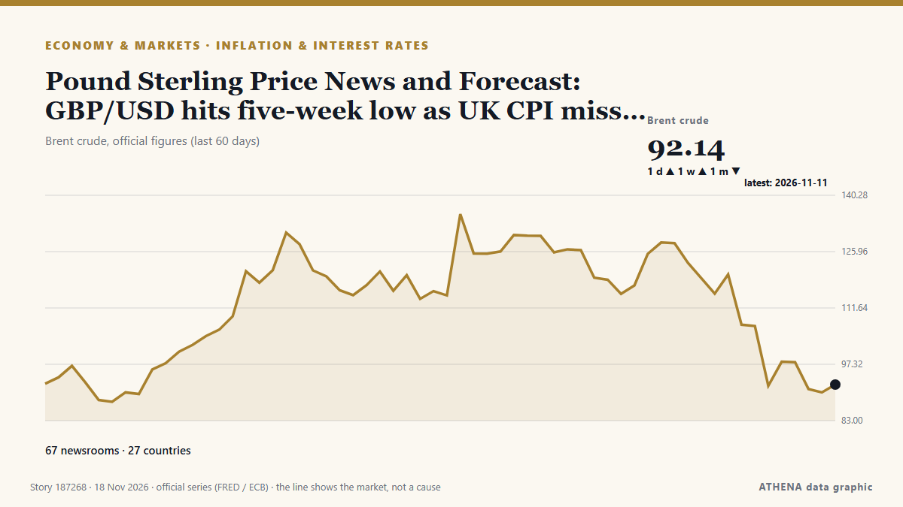

Οικονομία, Χρηματοοικονομικά & Αγορές
ΧορηγούμενοΠαρουσιάζεται από  Cybernetics and Artificial Intelligence Lab Welcome to the Cybernetics and Artificial Intelligence Laboratory, established at the Department of Business Administration of the National and Kapodistrian University of Athens. The lab is headed by Professor Dimitrios Thomakos. The lab aims to do research that can be published in top venues. Our research uses tools and methods of Artificial Intelligence, and lies in the following areas: - Forecasting - Decision making - Cyber security - Finance We are always looking forward to collaborating with exceptional students!
Cybernetics and Artificial Intelligence Lab Welcome to the Cybernetics and Artificial Intelligence Laboratory, established at the Department of Business Administration of the National and Kapodistrian University of Athens. The lab is headed by Professor Dimitrios Thomakos. The lab aims to do research that can be published in top venues. Our research uses tools and methods of Artificial Intelligence, and lies in the following areas: - Forecasting - Decision making - Cyber security - Finance We are always looking forward to collaborating with exceptional students!
Οι τίτλοι των ειδήσεων παρουσιάζονται στα αγγλικά, όπως δημοσιεύτηκαν.
Παρακολούθηση αγορών - επίσημα στοιχεία
Προς τα πού κινούνται τα επίσημα μεγέθη των αγορών - άνοδος, πτώση ή σταθερότητα - με την τελευταία επίσημη τιμή και την ημερομηνία της, και οι ειδήσεις αγορών που επιβεβαίωσε το ATHENA. Επίσημα στοιχεία, όχι τιμές σε πραγματικό χρόνο.
Ενέργεια
| 1 ημέρα | 1 εβδομάδα | 1 μήνας | Επίσημη τιμή | |
|---|---|---|---|---|
| Πετρέλαιο Brent | ▲ | ▲ | ▼ | $92,14/bblΕπίσημα στοιχεία της 11 Νοε 2026 |
| Πετρέλαιο WTI | ▬ | ▼ | ▼ | $89,62/bblΕπίσημα στοιχεία της 11 Νοε 2026 |
| Φυσικό αέριο ΗΠΑ (Henry Hub) | ▬ | ▲ | ▼ | $3,00/MMBtuΕπίσημα στοιχεία της 11 Νοε 2026 |
| Ευρωπαϊκό φυσικό αέριο (1 μήνας · 3 μήνες · 12 μήνες)(1Μ · 3Μ · 12Μ) | ▲ | ▲ | ▲ | $25,49/MMBtuΕπίσημα στοιχεία της 1 Σεπ 2026 |
| Άνθρακας (Αυστραλία) (1 μήνας · 3 μήνες · 12 μήνες)(1Μ · 3Μ · 12Μ) | ▲ | ▲ | ▲ | $153,84/tΕπίσημα στοιχεία της 1 Σεπ 2026 |
Τρόφιμα
| 1 μήνας | 3 μήνες | 12 μήνες | Επίσημη τιμή | |
|---|---|---|---|---|
| Σιτάρι | ▲ | ▲ | ▲ | $246,85/tΕπίσημα στοιχεία της 1 Σεπ 2026 |
Χρηματιστήρια ΗΠΑ
| 1 ημέρα | 1 εβδομάδα | 1 μήνας | Επίσημη τιμή | |
|---|---|---|---|---|
| S&P 500 | ▼ | ▼ | ▼ | Μόνο κατεύθυνση (δείκτης © Cboe)Επίσημα στοιχεία της 16 Νοε 2026 |
| Nasdaq Composite | ▼ | ▼ | ▼ | Μόνο κατεύθυνση (δείκτης © Cboe)Επίσημα στοιχεία της 17 Νοε 2026 |
Επιτόκια, κίνδυνος και δολάριο
| 1 ημέρα | 1 εβδομάδα | 1 μήνας | Επίσημη τιμή | |
|---|---|---|---|---|
| Απόδοση 10ετούς ομολόγου ΗΠΑ | ▼ | ▲ | ▲ | 5,12 %Επίσημα στοιχεία της 16 Νοε 2026 |
| Μεταβλητότητα αγοράς (VIX) | ▲ | ▲ | ▲ | Μόνο κατεύθυνση (δείκτης © Cboe)Επίσημα στοιχεία της 16 Νοε 2026 |
| Δολάριο ΗΠΑ, ευρύς δείκτης | ▬ | ▲ | ▲ | 122,65Επίσημα στοιχεία της 13 Νοε 2026 |
Το ευρώ έναντι άλλων νομισμάτων
| 1 ημέρα | 1 εβδομάδα | 1 μήνας | Επίσημη τιμή | |
|---|---|---|---|---|
| EUR/USD | ▼ | ▼ | ▼ | 1,0989 USDΕπίσημα στοιχεία της 17 Νοε 2026 |
| EUR/GBP | ▼ | ▼ | ▼ | 0,8330 GBPΕπίσημα στοιχεία της 17 Νοε 2026 |
| EUR/CHF | ▼ | ▲ | ▼ | 0,9233 CHFΕπίσημα στοιχεία της 17 Νοε 2026 |
| EUR/JPY | ▼ | ▼ | ▼ | 175,05 JPYΕπίσημα στοιχεία της 17 Νοε 2026 |
| EUR/CNY | ▼ | ▼ | ▼ | 7,3254 CNYΕπίσημα στοιχεία της 17 Νοε 2026 |
| EUR/TRY | ▼ | ▼ | ▼ | 55,399 TRYΕπίσημα στοιχεία της 17 Νοε 2026 |
| EUR/NOK | ▬ | ▼ | ▲ | 10,5755 NOKΕπίσημα στοιχεία της 17 Νοε 2026 |
Πηγές: Υπηρεσία Ενεργειακών Πληροφοριών ΗΠΑ (πετρέλαιο, φυσικό αέριο ΗΠΑ), ΔΝΤ (ευρωπαϊκό φυσικό αέριο, άνθρακας, σιτάρι), Υπουργείο Οικονομικών και Federal Reserve των ΗΠΑ (απόδοση 10ετούς, δείκτης δολαρίου) και Cboe (VIX), S&P Dow Jones Indices (S&P 500), Nasdaq (Nasdaq Composite), μέσω FRED (Federal Reserve Bank of St. Louis)· ισοτιμίες αναφοράς του ευρώ © Ευρωπαϊκή Κεντρική Τράπεζα. Οι τιμές είναι οι τελευταίες επίσημες, με την ημερομηνία τους - όχι τιμές σε πραγματικό χρόνο. Τις κατευθύνσεις τις υπολογίζει το ATHENA.
Κρυπτονομίσματα, ETF και μετοχές στις ειδήσεις
- Asian chip stocks rebound after Nvidia earnings beat expectations Κίνδυνος 3.5 18 Νοε
- Anthropic likely to price IPO above the current range of $70 to $78, sources tell CNBC Κίνδυνος 0.0 18 Νοε
- Anthropic IPO draws strong demand as AI company prepares for $64bn share sale Κίνδυνος 0.0 18 Νοε
- IAEA working with Russia, Ukraine to stock Zaporozhye NPP with needed fuel Κίνδυνος 4.8 18 Νοε
- British hackers face prison for GTA 6 data breach and crypto thefts Κίνδυνος 3.9 18 Νοε
- Oil prices fall as higher US crude stocks temper supply risks Κίνδυνος 0.8 18 Νοε
- 'He who claims equity must come with clean hands': Asif hits back at Bilawal Κίνδυνος 0.0 18 Νοε
- Mahanadi IPO explained: Valuation, reserves, risks and Coal India strategy Κίνδυνος 0.0 18 Νοε
- After $6.3 billion crypto heist, Binance plans Asia expansion Κίνδυνος 3.5 18 Νοε
- Popular websites subverted in bid to steal crypto, target iPhone users Κίνδυνος 0.0 18 Νοε

Πληθωρισμός & επιτόκιαPound Sterling Price News and Forecast: GBP/USD hits five-week low as UK CPI miss meets Fed hike expectations
UK inflation came in a tenth under forecast on Wednesday, and Federal Reserve (Fed) Governor Christopher Waller called for a half-point hike, so expected rates have moved against the Pound from both… από FXStreet
| 5 Νοε | 118 |
|---|---|
| 6 Νοε | 95 |
| 7 Νοε | 42 |
| 8 Νοε | 65 |
| 9 Νοε | 155 |
| 10 Νοε | 131 |
| 11 Νοε | 129 |
| 12 Νοε | 113 |
| 13 Νοε | 71 |
| 14 Νοε | 39 |
| 15 Νοε | 64 |
| 16 Νοε | 123 |
| 17 Νοε | 79 |
| 18 Νοε | 44 |
EU proposes new €45bn Ukraine loan for 2027
New cash is ‘best way to give Ukraine a strong hand at the negotiation table' από Euractiv
Indonesia central bank hikes rates to support rupiah
JAKARTA: Indonesia's central bank raised its policy rates by 25 basis points on Wednesday, resuming a tightening cycle intended to put a floor under the rupiah after the currency hit multiple record… από New Straits Times
Winter energy bill misery on way as price cap set to jump by 26% in January
Experts at Cornwall Insight have predicted Ofgem’s energy price cap will rise by 26% to £2,166 a year on January 1. από The Irish News (Belfast)
Armenian Economy Minister: Armenia not considering replacing EAEU with European Union
My goal, as the minister of economy, is to increase Armenia's export volumes to both the EU, the EAEU, and the Middle East markets. από NEWS.am (English)
Germany demands ‘transparency’ from Deutsche Bank after data leak
Germany’s finance minister has called for Deutsche Bank to be fully transparent after leaked documents revealed questionable past practices involving Russian oligarchs, Jeffrey Epstein, and former US… από Arab News
Jeff Bezos Says He Was ‘Heavily Involved’ In Robert Pattinson’s Casting As James Bond
Robert Pattinson was announced as the next James Bond on Monday, notching another iconic role just years after being cast as Batman. από Forbes Business
Bangladeshi garment workers, police clash in fresh wage protest
Workers are demanding a minimum monthly wage of 30,000 taka (US$240), up 140% from the current 12,500 taka, to cope with rising living costs. από Free Malaysia Today
Inflation hits 12-month high after further rise in petrol prices
The rate of Consumer Prices Index inflation was 3.6% in October, up from 3.5% in September, the Office for National Statistics said. από Evening Standard (London)
BoE policymaker refuses to rule out back-to-back rate rises
Clare Lombardelli says high energy prices and resilience of UK growth mean there is a case for a further increase ‘in the near term’ από Financial Times - Global economy
After $6.3 billion crypto heist, Binance plans Asia expansion
FBI, Binance say North Korea responsible for the hack, but Pyongyang denies the allegation. από Express Tribune
IMF Reports Major Progress in Ukraine Talks, Bringing $1.6 Billion in Aid Closer
The IMF reported significant progress in talks with Ukraine on the second and third reviews of its $8.1 billion loan program. από Kyiv Post
Deutsche Bank processed $582 million in suspicious Epstein-linked transactions
German banking giant Deutsche Bank processed approximately $582 million in transactions flagged as suspicious in connection with convicted sex offender Jeffrey Epstein, according to newly leaked… από AzerNews
Gold slumps below $3 800 as Fed officials signal more rate hikes
Spot gold fell 1.4% to $3 795.55 an ounce at 10:08 a.m. in Singapore. από Moneyweb
Popular websites subverted in bid to steal crypto, target iPhone users
Cybersecurity firm HudsonRock said it had found evidence the sites had served malicious code to their visitors. από The Straits Times
A new James Bond has always been a chance to reinvent the series
The announcement of a new actor to play James Bond gives the franchise an opportunity to reinvent itself for a new audience. από ABC News Australia
Palestinian woman, 72, shot dead by Israeli settlers in West Bank, health ministry says
Palestinians say there was an attack by settlers in al-Duyuk al-Tahta, while the Israeli military says the settlers fired after being attacked. από BBC News
Cork couple 'who got an ordinary mortgage' take High Court action over interest rate
The action is being regarded as a test case for those who took out bank mortgages which were subsequently taken over by other entities and who now face paying high interest rates. από Irish Examiner
European Commission Raises Bulgaria's 2026 Growth Forecast to 2.7%, Expects Growth to Slow to 2.1% in 2027
The European Commission expects Serbia's economic growth to accelerate over the next two years before slowing in 2028, according to its Autumn 2026 Ec. από N1 Serbia (English)
Paraguay's ousted president moved to prison after luxury cell exposé
Former Paraguayan President Santiago Peña was moved to a military prison after reports revealed privileged detention conditions, officials said. από UPI World News
Minns shelves underquoting laws amid housing slump and backlash from Sydney agents
The laws had promised new restrictions on agents to provide prospective home buyers with more transparency over pricing. από Sydney Morning Herald
President of Uzbekistan concludes visit to Oman
Muscat: President Shavkat Mirziyoyev of the Republic of Uzbekistan, and his accompanying delegation left the country today following a two-day state visit to the Sultanate of Oman.... από Oman Observer
Alonso, Loeb to make Dakar Rally return for Aston Martin
Fernando Alonso, who drives for the Aston Martin F1 team, previously took part in the Dakar Rally in 2020, when he finished 13th in a Toyota. από Free Malaysia Today
US judge clears brothers in $25M Ethereum MEV case after mistrial
Judge Jessica Clarke said the transactions did not involve false promises, but the ruling did not determine whether the brothers’ conduct was ethical or violated other laws. από Cointelegraph
Former Wall Street regulator warns AI bubble could burst, trigger recession
Gensler argues history shows how periods of rapid technological innovation, massive investment reach turning point. από Express Tribune
Global economy 'standing on one leg' as AI financing risks mount: IMF chief
Over $1T in circular financing among AI firms, much of it debt-funded, could pose risks if investor confidence weakens, Kristalina Georgieva warns. από Anadolu Agency (English)
Russell Brand could face prison discipline after wife shares his jail message
Convicted rapist Russell Brand could face disciplinary action at HMP Littlehey if he is found to have broken prison rules, after his wife Laura Gallacher shared a message from him on YouTube. από Manchester Evening News
Global banks set to enter 2027 on strong footing, Moody's report says
KUALA LUMPUR: Global economic growth is expected to slow over the next two years as geopolitical tensions, trade disruptions and uncertainty surrounding the artificial intelligence (AI) boom threaten… από New Straits Times
Gold and silver prices rise on commodity markets
Gold and silver prices have risen on the COMEX commodity exchange in New York. από AzerNews
Skilled immigration cuts US science, engineering wages by 3.5%: Study
A Harvard economist's study found that US workers with master's degrees in computing, electrical engineering earned about 16% less due to skilled immigrant inflows, partly offset by productivity gains. από Business Standard
Bitcoin price approaches $65,000
Bitcoin (BTC) is struggling to find support, slipping below $70,000 as multiple headwinds threaten to push the Crypto King lower. από FXStreet
US banking app users report outages from software bugs
WASHINGTON: American users of several major banking apps and online portals reported outages on Monday, according to monitoring site Downdetector.com, with one institution ruling out a cyberattack as… από New Straits Times
Rightmove records £6,745 fall in the average home asking price in November
2026 is on track to end with prices lower than at the end of last year, Rightmove said. από Evening Standard (London)
Intel facing lawsuit after 29% stock plunge
Intel has been sued by shareholders who accused the US chipmaker of defrauding them by concealing the impact of a prolonged slowdown in personal computer sales that caused its stock price to plunge… από RTÉ News
Downdetector reports outages at major US banks
User reports on Monday indicated problems at JPMorgan Chase, Bank of America, U.S. από The Korea Times